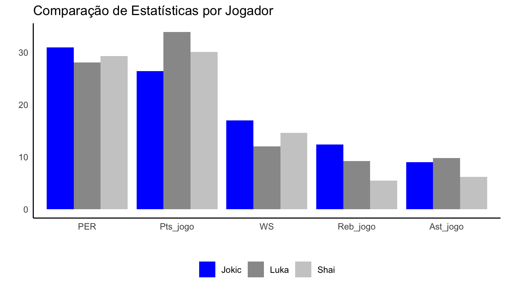

Introdução
Atualmente, é cada vez mais perceptível que o uso da estatística no esporte resulta em melhorias tanto nas performances individuais quanto coletivas. Um exemplo disso é o aumento da procura de times e atletas por analistas, que, por meio da análise de dados, podem identificar padrões de desempenho de suas equipes e dos adversários, ajustar suas táticas de acordo com as tendências observadas e maximizar suas chances de vitória. Neste contexto, destacarei a importância desse uso, seu impacto e um aspecto que nem sempre é percebido: sua influência nas premiações individuais.
Meu interesse por esse tema foi despertado recentemente ao ver um comentário de Shaquille O’Neal, jogador aposentado e atualmente comentarista, criticando a escolha de Nikola Jokic, o jogador em análise hoje, como ganhador do prêmio de MVP. Esse comentário me fez refletir sobre como o prêmio de MVP se transformou e como tem se tornado cada vez mais dependente de estatísticas abrangentes na escolha do vencedor.
MVP: O que é e Como Funciona
O prêmio de MVP, ou Most Valuable Player, é concedido anualmente ao jogador considerado mais impactante para sua equipe durante a temporada regular da NBA. A escolha do MVP é feita por um painel de jornalistas e especialistas em basquete, que votam no jogador que consideram mais qualificado para o prêmio com base em uma série de critérios, incluindo estatísticas individuais, contribuições para o sucesso da equipe, liderança e impacto geral no jogo. Anteriormente, a escolha do MVP era baseada principalmente em estatísticas básicas, mas agora inclui diversas métricas avançadas.
Exemplo de Algumas Dessas Métricas:
Player Efficiency Rating (PER): busca quantificar o impacto geral de um jogador em todas as áreas do jogo, considerando uma variedade de estatísticas individuais e ponderando-as de acordo com sua importância relativa.
Win Shares (WS): calcula a contribuição de um jogador para as vitórias de sua equipe ao longo da temporada, levando em conta sua contribuição ofensiva, defensiva e sua presença em quadra.
Pts/jogo: representa a média de pontos que um jogador marca por jogo.
Reb/jogo: representa a média de rebotes que um jogador consegue por jogo.
Ast/jogo: representa a média de assistências que um jogador faz por jogo.
Análise Gráfica dos Finalistas do Prêmio MVP
Para ilustrar a mudança no prêmio MVP devido ao aumento do peso das estatísticas, apresento uma análise gráfica com as principais estatísticas dos finalistas deste ano: Nikola Jokic, Shai Gilgeous-Alexander e Luka Doncic. Os dados utilizados para construir e analisar esse gráfico foram obtidos do site basketball-reference e correspondem à temporada regular 2023-24 dos três jogadores. A análise visa contrapor a declaração de Shaq: “Quero parabenizá-lo, mas quero que você ouça isso de mim primeiro. Achei que o SGA deveria ter sido o MVP, isso não é desrespeito a você, mas parabéns.”. Essa opinião parece ser baseada em uma visão tradicional da premiação, que favorece os jogadores mais dominantes.
É possível observar no gráfico que, do ponto de vista estatístico, a escolha de Jokic como MVP não é um erro. Em todas as métricas analisadas, a diferença entre ele e os outros concorrentes não é significativa, e ele lidera em métricas como PER e WS, que melhor refletem o impacto de um jogador em sua equipe.
Conclusão
Quis destacar como a estatística tem influenciado positivamente o basquete, não apenas melhorando o desempenho individual e coletivo, mas também reconhecendo jogadores com habilidades anteriormente subestimadas, o que contribui para o desempenho da equipe. Além disso, em minha opinião, o uso da estatística aumenta a transparência e a objetividade na seleção do MVP. Ao considerar uma gama mais ampla de métricas, os eleitores do MVP podem tomar decisões mais informadas e justas, reconhecendo verdadeiramente o jogador mais valioso para sua equipe e para a liga como um todo.